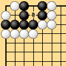
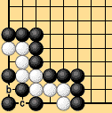
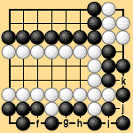
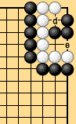

|
| Since area rules are basically concerned with who is able to play the most stones, territory in seki and other points that can be occupied by only one side are counted for the side that can occupy them. The points 'a,' 'b,' and so on in Dia. 3-8 each have a value of one point to Black. |
|  |  |
|  |  |
| Dia. 3-8 | |
|---|---|
|
Traditional territory rules maintain the principle that points like these are not territory and should not be counted. For that reason life and seki must be rigorously defined, something which traditional territory rules have not necessarily accomplished. This is a major problem. Whether to count territory and one-sided neutral points in a seki is an important choice that has to be made in formulating territory rules. One stance, taken by territory rules II in Part I, is to respect tradition and not count these points. Another stance, taken by territory rules I, is to count these points in order to simplify the rules and reach agreement with area rules. |